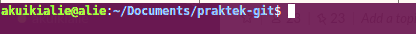
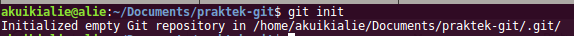

Dasar
Inisialisasi
Inisialisasi, opo iku yo? Jadi kita bisa mulai membuat repositori di local kita. Cukup jelas perintah dari GIT untuk menginisialisasi yaitu
$ git init
Dengan cara :
- Buka Terminal atau Git Bash
- Masuk ke dalam folder yang kita akan jadikan tempat untuk menyimpan aplikasi / source code kita. Seperti dibawah ini :

- Kita bisa menulis perintah di atas
- Setelah itu akan muncul response seperti dibawah ini

- Lalu kita kisa bisa lihat, nantinya akan muncul folder /.git. Folder ini akan berisi file / sesutu yang tidak jelas yang dikelola oleh GIT untuk mengatur perubahan dari repositori local kita.